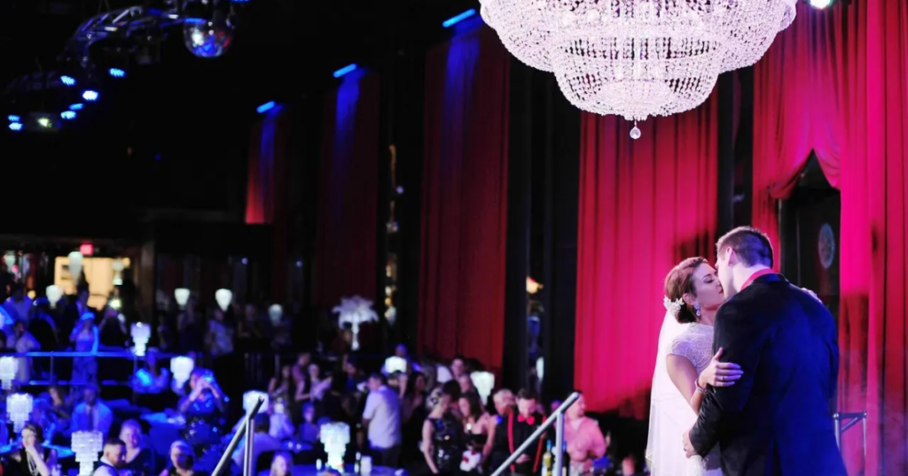

Capitol Theatre
Historic downtown weddings, receptions, and photo-ready theatre style
The Capitol Theatre sits in the heart of downtown Maryville and is a natural match for couples who want a wedding weekend with restaurants, photos, and lodging close together.
Open Capitol Theatre